Guide d'assemblage du joystick connecté
Ce guide vous explique comment assembler le joystick connecté à partir des composants électroniques, des
pièces imprimées en 3D et des pièces en contreplaqué de 5mm qui sont listées
dans la liste du matériel nécessaire (BOM).

Impression du boîtier et découpage des parties en bois
La partie bois va servir de support aux composants électroniques et à la coque en 3D.
Téléchargez les fichiers STL / DXF nécessaires pour obtenir les pièces suivantes:

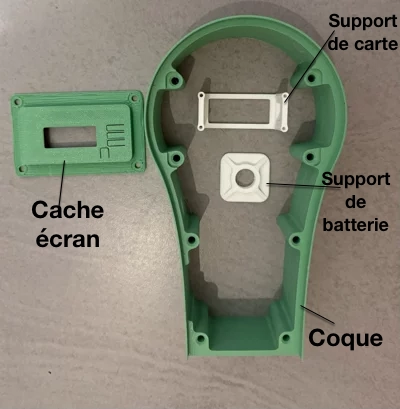
Assurez-vous d'imprimer et de découper/poncer/vernir toutes les pièces nécessaires avant de commencer
l'assemblage.
Préparation des éléments électroniques et des connections
Étape 1: Soudure des broches de la Feather
Attention : Faites attention au sens de la carte. Il y a un côté avec moins de broches. Assurez-vous de bien les repérer.

Feather M0 avec ses broches, avant soudure

Feather M0 avec les broches soudées
Astuce : Pour souder les broches bien parallèles, retournez la carte avec les broches en place, et utilisez de la patafix pour éviter qu'elles ne bougent pendant la soudure (la photo le montre sur un autre type de carte).

Étape 2 : Préparation du joystick
Ce joystick, de type analogique, comprend deux potentiomètres situés à angle droit, avec chacun 3 bornes.
La borne de gauche est celle de l'alimentation (3.3V ou +),
celle de droite correspond à la masse (ou -), et celle du milieu, au signal.
Souder les broches + et - à des câbles rouge/noir. Puis relier (soudure)
les bornes + ensemble. faire de même pour les -.
Enfin, souder les broches de signal (milieu) à des câbles de couleurs différentes.

Étape 3: Soudure des câbles du joystick à la Feather
Positionner le joystick de façon à voir un potentiomètre de face et l'autre sur le coté droit.
Souder les broches + et -
du joystick aux broches 3.3V et GND de la Feather.
Le signal de celui de face (vert) doit etre connecté (soudé) à la broche A0 de la carte Feather.
L'autre (jaune) devra être connecté à la broche A1 de la carte.
Notez sur les images ci-dessous, l'utilisation de câbles Dupont (femelles sans la protection plastique)
pour faciliter la soudure des câbles sur les broches de la Feather. Les soudures sont ensuite isolées à
l'aide de manchons thermo-rétractables.
Autre point, il peut être utile (pas visible sur cet exemple) de raccourcir de 2 mm les broches de la
Feather.

Feather M0 et joystick soudés

Feather M0 vue de dessous

Broches de la Feather soudées avec manchons thermo-retractables
Étape 4: Préparation des connecteurs, prises et batterie
1- Préparation de la prise USB-C
Soudez le câble rouge de la prise USB-C vissable au câble rouge de la prise usb-micro.
Faire de même
avec les câbles noirs.


On obtient un convertisseur USB-C vers USB micro.
(Ceci n'est nécessaire que pour les cartes FEATHER M0 et nrf52. Si vous utilisez une autre carte - y
compris FEATHER BLE mais plus récente- , elle aura une prise USB-C native. il faudra donc souder une
prise USB-C mâle sur le prise USB-C vissable pour faire une rallonge.)
2- Dérivation du câble (JST-PH) de la batterie, pour y placer un interrupteur.
Les cartes Feather de chez Adafruit sont alimentables soit par une batterie LiPo avec un connecteur
JST-PH, soit via usb (micro pour les M0 et nrf52), soit les deux.
Si la carte est connectée à une batterie -et- à via sa prise usb, l'alimentation usb recharge la
batterie.
Pour pouvoir éteindre la carte et ne pas consommer de batterie, il faut placer un interrupteur en
coupure.
- Souder un des câbles de la prise jst-ph mâle (sur la photo, le câble rouge) sur une des broches de l'interrupteur.
- Puis souder sur l'autre broche de l'interrupteur, le câble de même couleur, de la prise jst-ph femelle.
- Souder ensuite les câbles noirs des deux prises ensemble.
Ensuite, il suffit de connecter la batterie sur ce montage pour avoir une alimentation de Feather, avec un
interrupteur. Ce montage permet aussi de facilement monter le tout dans le boitier, et de changer la
batterie si besoin.
{kind=link}
Montage final
- Vissez le support de feather (1) sur la plaque de bois du fond, avec 4 vis M2.5.
- Collez (super glu) le support de batterie (2) sur la plaque du fond (en blanc sur la photo).
- Vissez la plaque du fond sur la coque avec les vis M4 à tête plates.
- Installez la prise USB-C vissable dans la coque.
{kind=link}
Insérez deux colliers de serrage dans les fentes du support de batterie.
{kind=link}
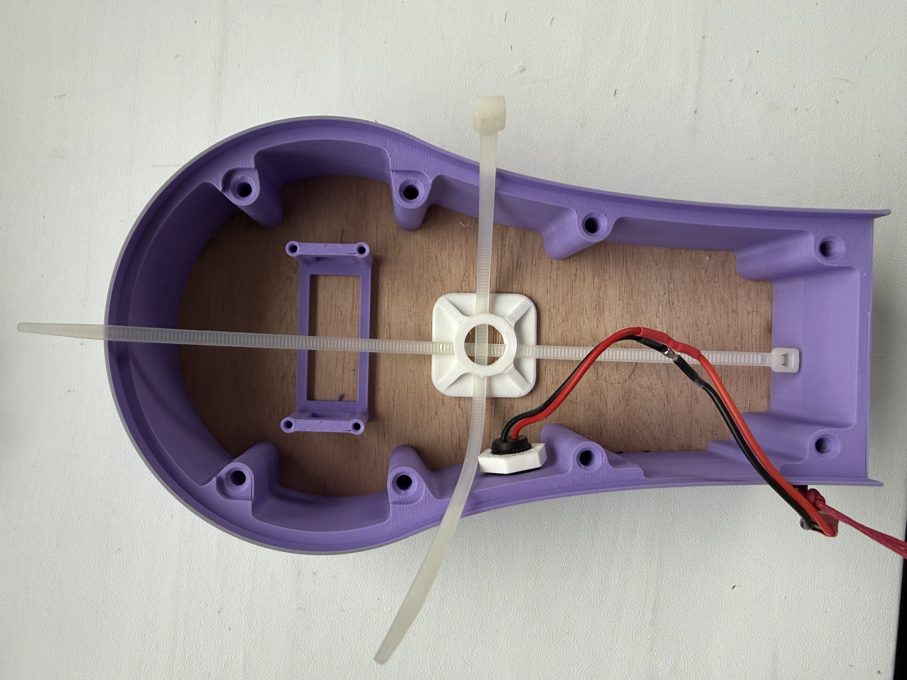
0 4px 8px rgba(0, 0, 0, 0.1); " />
Déconnectez la batterie de l'interrupteur (via la prise jst-ph).
Installez la batterie et serrez
les colliers (en faisant attention à ne pas serrer sur les connections).
{kind=link}
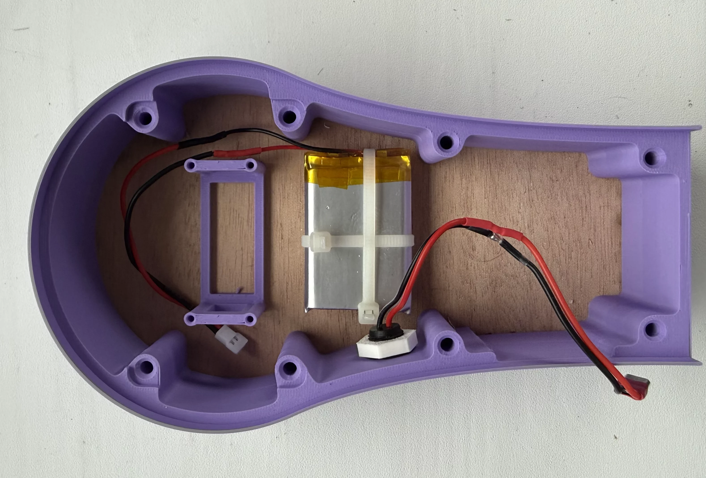
Mettez en place le joystick relié à la carte
en positionnant un potentiomètre à droite et l'autre en bas (comme sur la photo).
Branchez la prise usb-micro (venant de la prise usb-c vissable) sur la carte (en rouge et en bas de la
carte sur la photo).
{kind=link}
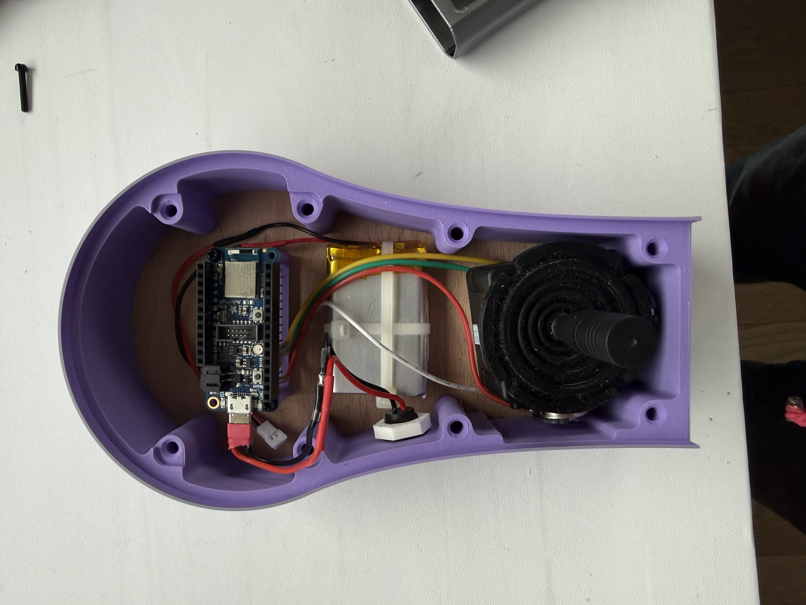
Vissez la carte avec des vis 2.5 sur son support 3D (2 vis de 6-10 mm de long suffisent).
Attention à ne pas visser trop fort dans le support 3D.
Il faut juste que cela tienne sans bouger.
{kind=link}
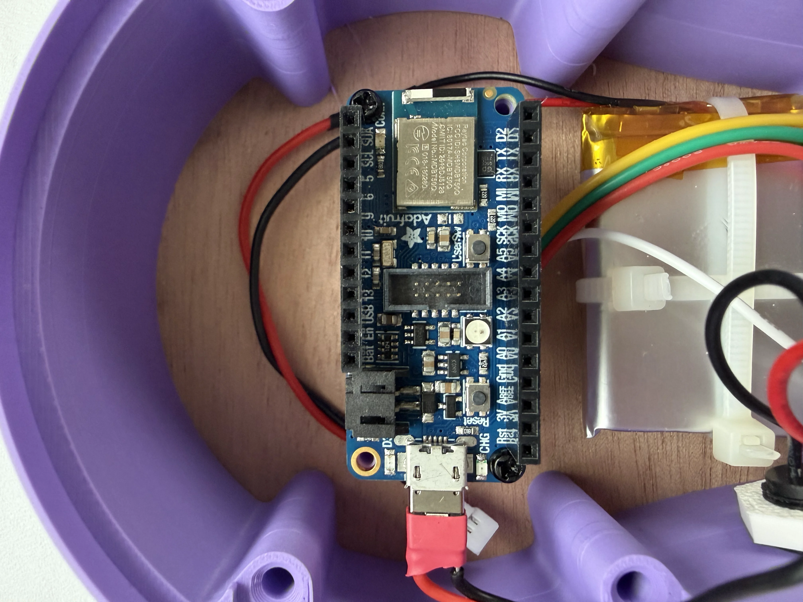
Insérez l'interrupteur sur la plaque du haut du joystick.
{kind=link}
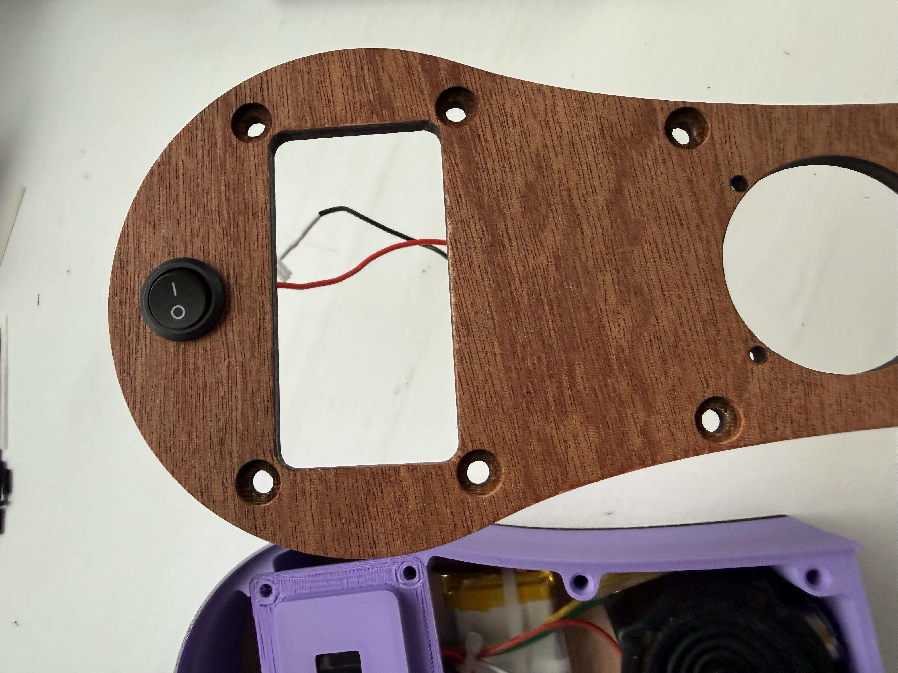
et connectez-le à la batterie via les prise jst-ph.
{kind=link}
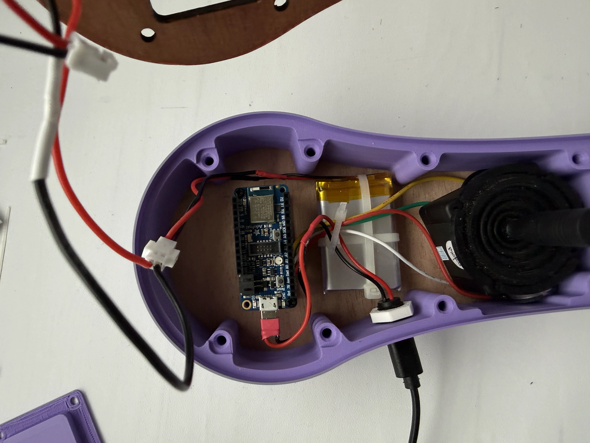
Connectez la prise jst-ph restante sur la carte (sur son coté gauche sur la photo).
{kind=link}
{kind=link}
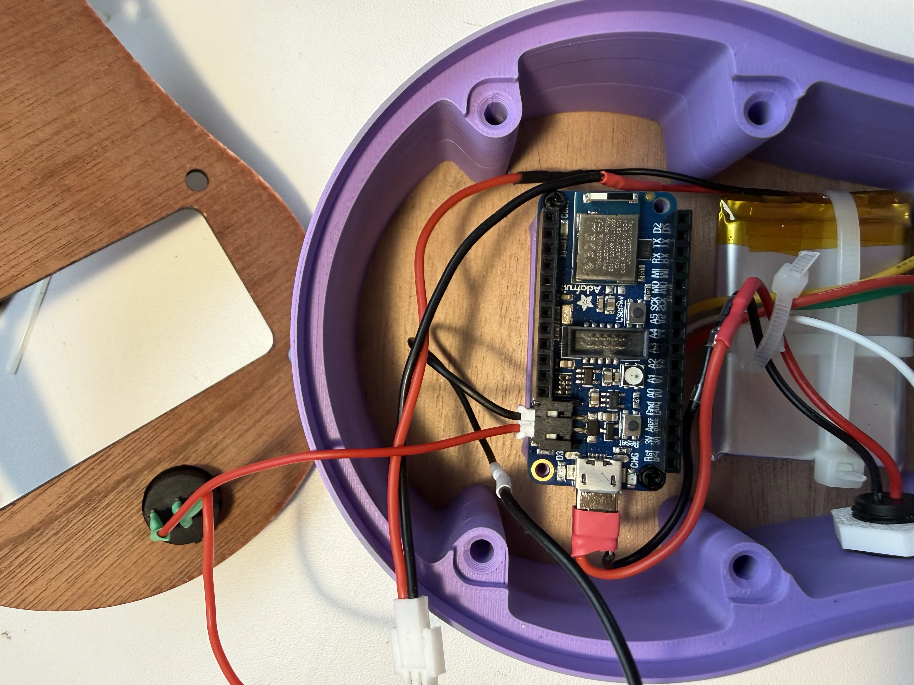
Enfichez ensuite l'écran sur la carte
{kind=link}
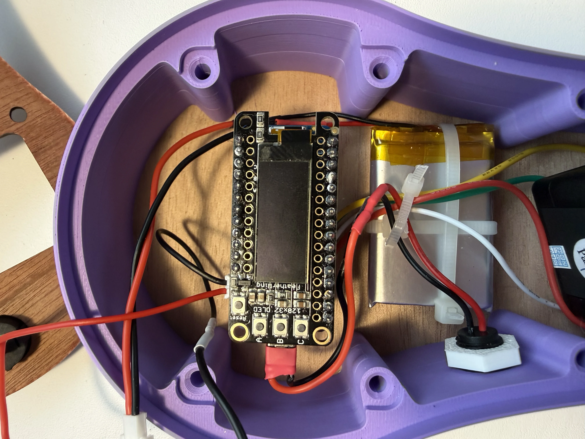
Placez le cache écran sur l'écran.
{kind=link}
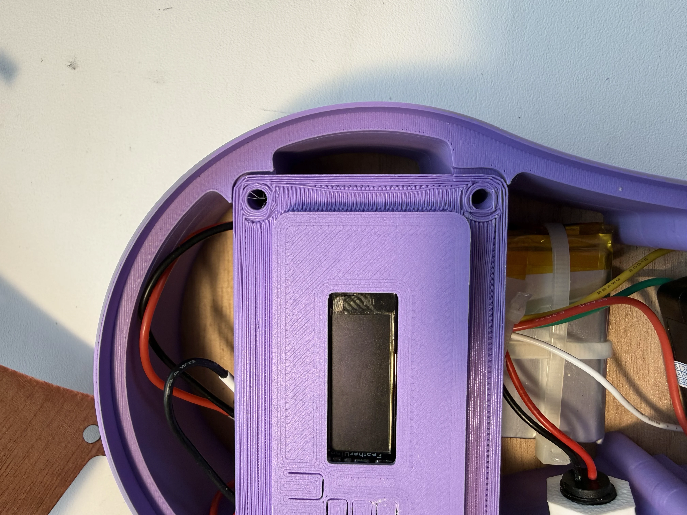
Avant de refermer la boîte, il est temps de vérifier que les branchements sont corrects !
Allumez le joystick et vérifiez que l'écran s'allume.
{kind=link}
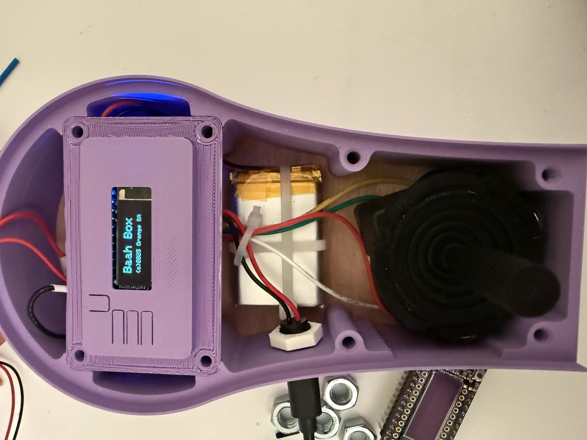
Tout fonctionne ?
Alors positionnez la plaque de dessus sur le boitier,
faites passer la jupe du joystick au travers du trou, pour la placer au dessus de la plaque,
vissez par dessus la protection de jupe fournie avec....
{kind=link}
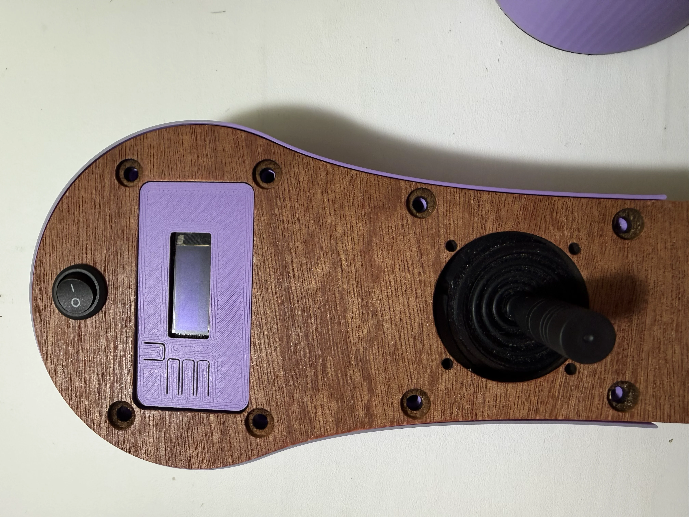
Et voilà !
vous avez monté votre joystick connecté!
Il ne vous reste plus qu'à coller le support de bras sous la plaque du haut pour rigidifier le bras du joystick.
{kind=link}
Votre Joystick connecté est maintenant assemblé. Vous pouvez passer à l'installation de l'application et à la configuration de l'application.
Pour installer l'application et configurer votre joystick, consultez le manuel d'utilisation de la BaahBox, les écrans sont exactement les mêmes que ceux du joystick.